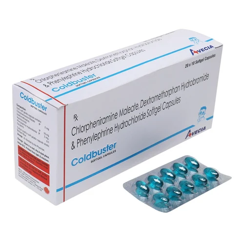
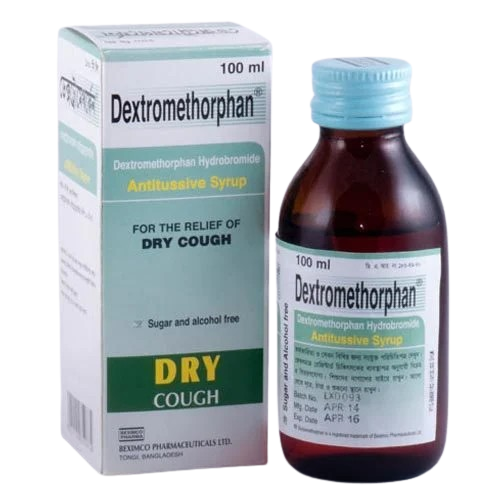
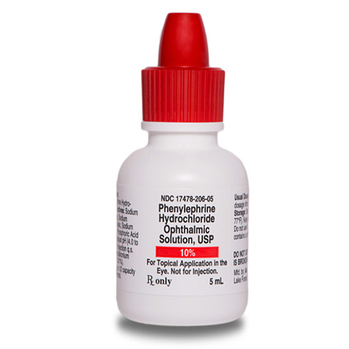
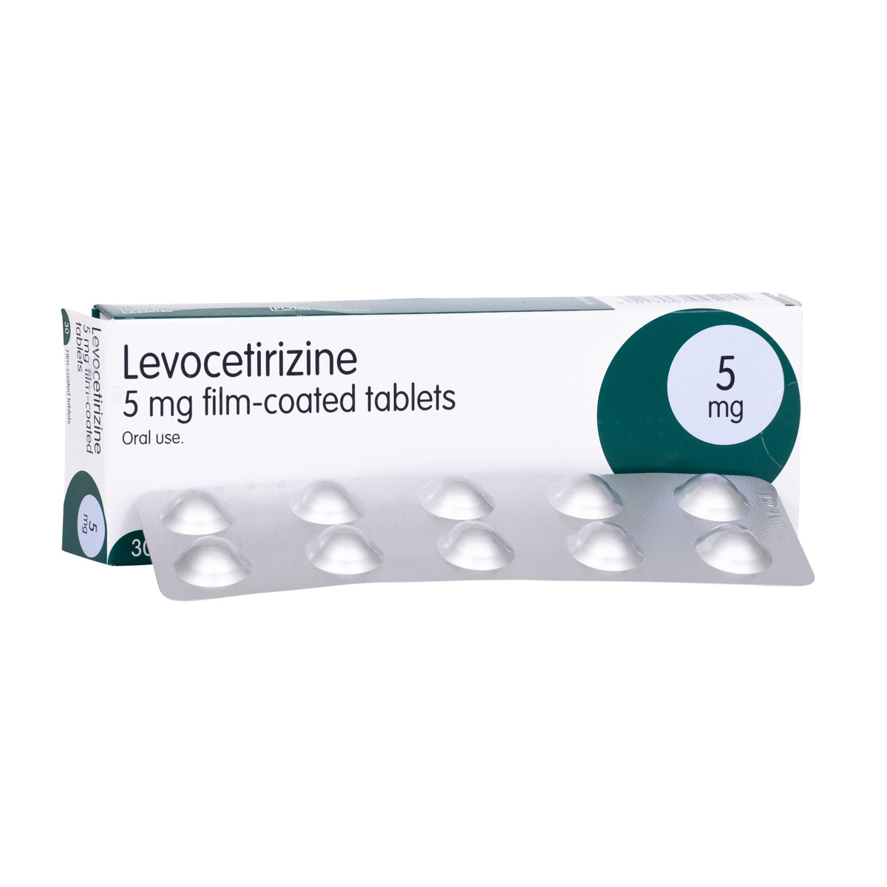

Cetirizine (Cetzine)

Cetirizine is an antihistamine used to relieve allergy symptoms like runny nose, sneezing, and watery eyes. It is non-drowsy and works by blocking histamine, a substance your body makes during an allergic reaction.
Chlorpheniramine (Avil)
Chlorpheniramine is an older antihistamine that relieves allergy and cold symptoms. It causes drowsiness and is best taken at night. It helps reduce sneezing, itching, and nasal congestion.
Dextromethorphan (Benadryl)
Dextromethorphan is a cough suppressant found in many cold medicines. It helps stop dry, irritating coughs by acting on the brain’s cough center, providing relief from persistent coughing.
Phenylephrine
Phenylephrine is a decongestant used to relieve nasal congestion caused by colds or allergies. It narrows blood vessels in the nasal passages, reducing swelling and congestion.
Levocetirizine
Levocetirizine is a modern antihistamine that treats runny nose, sneezing, and watery eyes with fewer side effects. It is effective and causes less drowsiness compared to older medications.